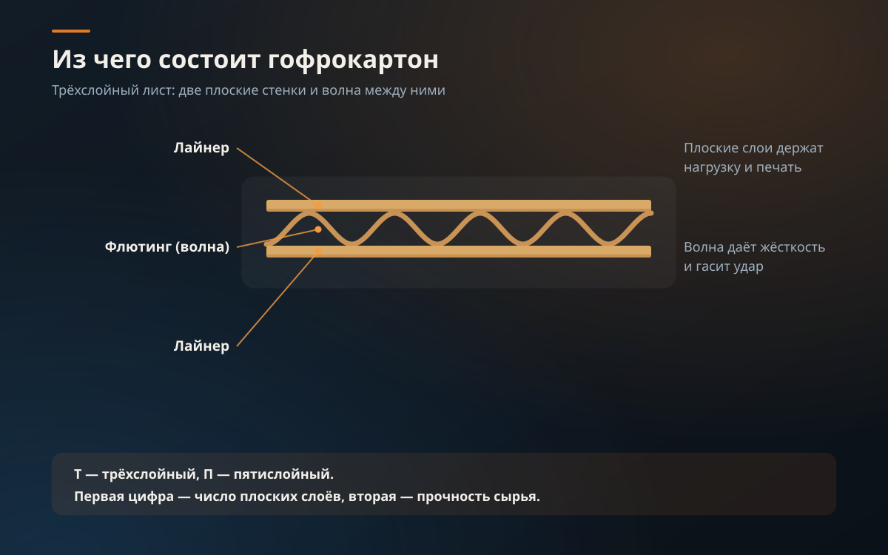

Марка гофрокартона — это буква и две цифры. Буква говорит, сколько в листе слоёв, первая цифра — сколько из них плоских, вторая — насколько прочное сырьё. «Т-22» читается как «трёхслойный, два плоских слоя, вторая ступень прочности».

Что означает буква
Т — трёхслойный картон: одна волна гофры между двумя плоскими слоями. Это основной материал производства: короба, ящики, лотки и уголки под товар обычного веса. П — пятислойный: две волны и три плоских слоя. Он держит вес и жёсткие условия перевозки — тяжёлый и габаритный товар, многооборотную тару, экспортные отправки. Подробный разбор — в статье три или пять слоёв.
Что означают цифры
Первая цифра — количество плоских слоёв. У трёхслойного картона их два, у пятислойного — три, поэтому в прайсе и стоят «Т-22» и «П-32». Вторая цифра — ступень прочности сырья: чем она выше, тем более прочный картон использован в лайнерах.
Иногда к марке добавляется буква профиля — например, Т-23В. Профиль — это сочетание высоты волны и её шага. Чем выше волна, тем толще лист и тем лучше он амортизирует; чем ниже — тем ровнее поверхность под печать. Коробки для пиццы мы делаем из профилей «E» и «В», куриный лоток — из Т-23В.
Какие марки у нас в прайсе
| Марка | Конструкция | Под какой товар | Примеры позиций |
|---|---|---|---|
| Т-22 | Трёхслойный, два плоских слоя | Товар обычного веса, ходовая транспортная тара | Короба 600×400×400, 400×300×300, 380×253×237, 320×250×250 и 200×200×250 мм; лотки 380×285×120 и 380×285×90 мм |
| Т-23В | Трёхслойный, профиль «В» | Пищевая тара, в том числе для заморозки | Куриный лоток 538×378×108 и 545×380×110 мм |
| П-32 | Пятислойный, три плоских слоя | Тяжёлый и габаритный товар, дальняя перевозка | Короба 577×392×323 и 600×400×280 мм |
Цены по каждой позиции и тиражу — в таблице на странице «Гофроящики».
Как выбрать марку на практике
- Посмотрите на вес и хрупкость товара: обычный вес — трёхслойный картон, тяжёлый или хрупкий — пятислойный.
- Учтите перевозку: чем дальше едет короб и чем выше его штабелируют, тем больше запас прочности нужен.
- Нужна ровная поверхность под печать — скажите об этом сразу: под неё подбирается профиль, а не только марка.
- Сомневаетесь — не угадывайте. Пришлите вес и габариты товара, марку подберём сами при расчёте.
Когда с маркой определились, остаётся размер — как его посчитать, разобрано в статье как рассчитать размер коробки.